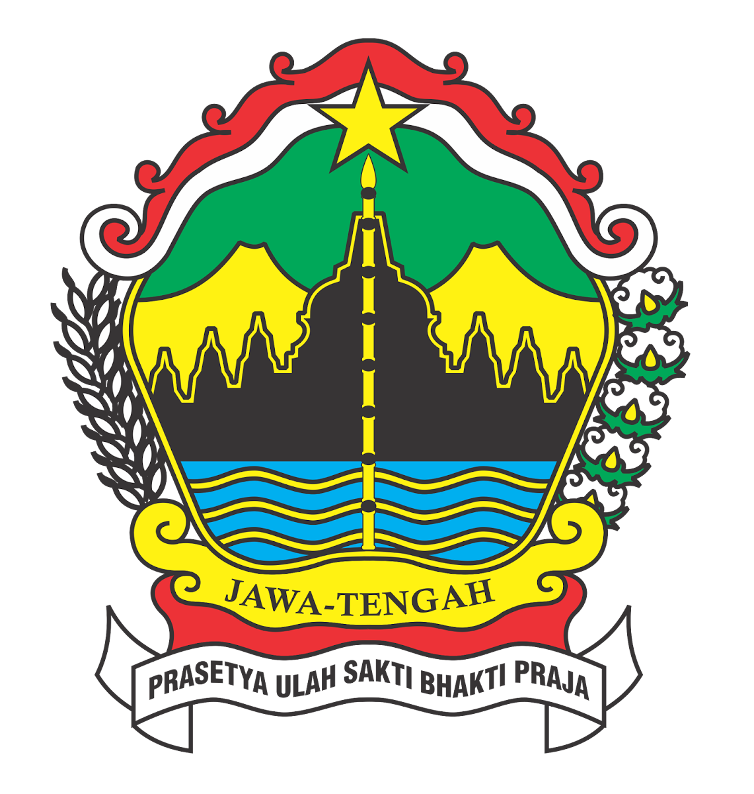
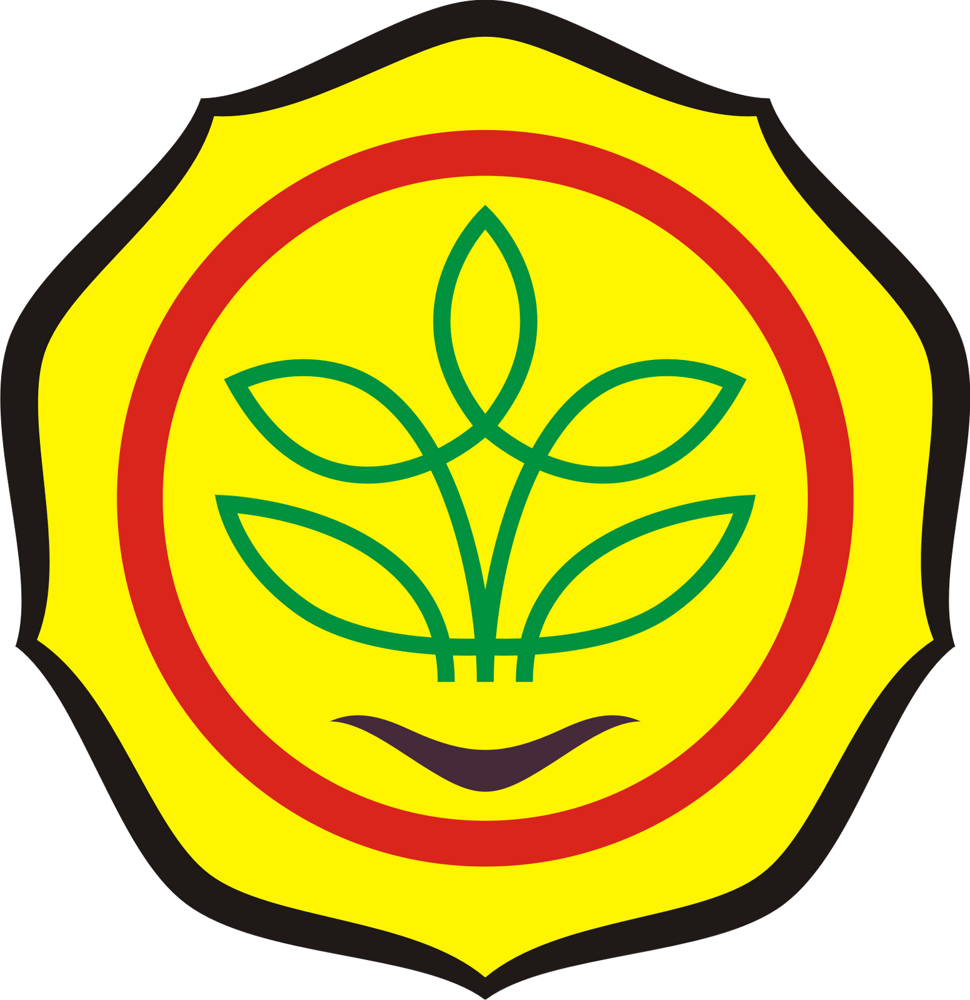
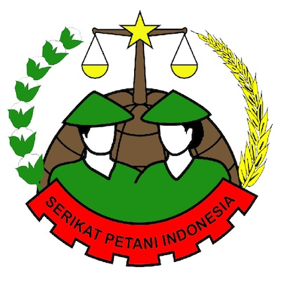

AgriGeoTech merupakan penyedia solusi WebGIS untuk pertanian dengan menghadirkan teknologi geospasial canggih untuk meningkatkan efisiensi dan produktivitas pertanian.
Jenis tanah yang tersedia sangat memengaruhi pilihan tanaman apa yang akan ditanam. Karakteristik fisik dan kimia dari setiap jenis tanah memengaruhi bagaimana tanaman dapat mendapatkan air, nutrisi, dan aerasi.
Tanah aluvial berasal dari bahan yang dibawa oleh sungai dan air hujan. Biasanya ditemukan di delta sungai dan dataran banjir. Struktur gumpal, berwarna coklat hingga keabu-abuan, dan tekstur halus. Memiliki banyak unsur
hara, pH netral, dan mampu menampung air dengan baik.
Cocok ditanami: Padi, palawija, tebu, tembakau, kelapa, dan buah-buahan.
Tanah ini terletak di wilayah tropis dengan iklim tropis yang stabil. Pembentukannya melibatkan pelapukan batuan dasar yang intensif. Struktur remah, berwarna merah hingga cokelat, dan tekstur lempung Memiliki pH antara 4.5
dan 6.5, mengandung banyak unsur hara yang berubah-ubah, dan mampu menyerap air dengan baik.
Cocok ditanami: Karet, kopi, teh, coklat, dan kelapa sawit.
Terbentuk dari endapan bahan dari gunung berapi yang meletus baru-baru ini atau dari bahan lainnya yang agak baru tererosi. Tanah ini memiliki tekstur yang kasar, pH 6-7, dan mengandung unsur P dan K serta sedikit unsur N.
Tanah ini sulit menampung air, sehingga beberapa jenis tanaman tidak cocok untuk ditanam di sana.
Cocok ditanami: Palawija, jagung, kacang tanah, dan tembakau.
Tanah ini terbentuk di tempat-tempat yang berbatu atau di tempat-tempat di mana lapisan batuan sangat dekat dengan permukaan tanah. Struktur remah, solum dangkal, dan tekstur beragam Memiliki banyak unsur hara, pH netral,
dan mampu menampung air dengan baik.
Cocok ditanami: Tanaman yang tahan kekeringan dan infertilitas, seperti alang-alang dan pohon jati.
Analisis Pemetaan Indeks Potensi Lahan di Kabupaten Magelang Details
Kabupaten Magelang Penyangga Pangan Nasional Details
Dinas Pertanian Cek Pengolahan Lahan Sawangan Details
Bupati Magelang: Sektor pertanian masih jadi andalan gerakkan ekonomi Details
Pemerintah Ingin Petani Indonesia Maju Dan Modern Details
Sensus Pertanian 2023: Petani Milenial di Kabupaten Magelang Capai 27 Ribu Lebih Details
Dengan teknologi WebGIS terbaru, kami siap membantu Anda mengoptimalkan pertanian Anda. Jika Anda memiliki pertanyaan tentang produk, demo, atau konsultasi, hubungi kami. Semua kebutuhan Anda akan dipenuhi oleh tim kami.
Departemen Teknologi Kebumian, Sekolah Vokasi , Universitas Gadjah Mada
Jalan C Simanjutak No .76A, Gondokusuman, Blimbing Sari,
Caturtunggal, Kec. Depok, Kota Yogyakarta, Daerah Istimewa Yogyakarta
azhayuniati@mail.ugm.ac.id
Phone: (+62)895425511177